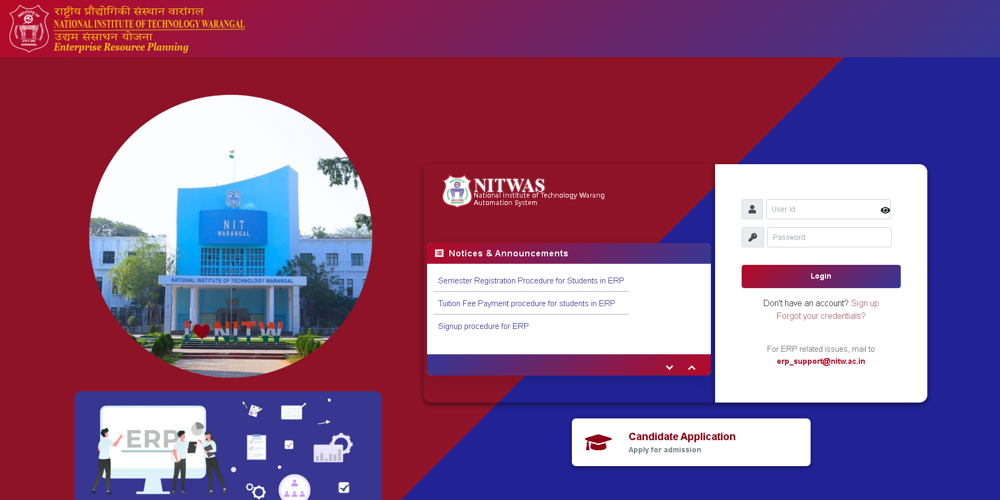

Smile - ERP System Application

Smile is an internal ERP application developed for NIT Warangal to manage various administrative tasks across the institute. I contributed to the development and enhancement of this system, focusing on creating efficient modules that streamline institutional processes.
My Contributions
- Developed new modules to extend the application's functionality, ensuring they meet the specific operational needs of different departments
- Regularly updated and improved existing modules based on user feedback and evolving requirements
- Collaborated with various teams to gather requirements, analyze workflows, and deliver tailored solutions
- Enhanced system efficiency and performance through optimized code and database queries
Tech Stack
- Backend: Java, Hibernate, Spring Framework
- Frontend: jQuery, AJAX, HTML, CSS
- Database: PostgreSQL
- Other Technologies: REST APIs, Maven, Git
Key Features Implemented
- Student registration and management module
- Faculty workload management system
- Course allocation and scheduling
- Examination management portal
- Financial tracking and reporting
The application has significantly improved task management efficiency within the institute, reducing manual work and providing real-time access to critical information for administrators and staff.
I would appreciate any feedback or welcome any questions you might have. You can find my contact information on the homepage.
↑ Go to Top